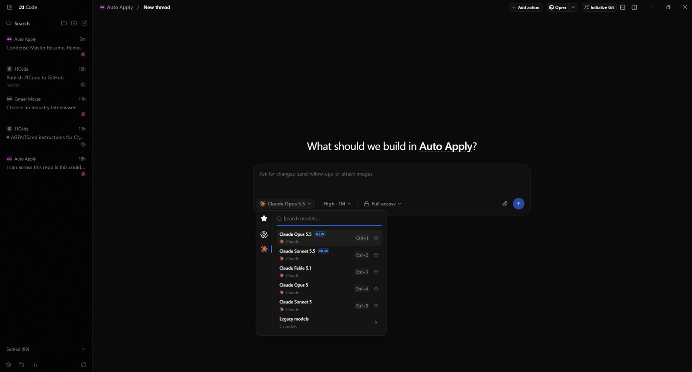

J1 Code
Creator and maintainer · 2026
J1 Code is my fork of T3 Code, an open-source desktop app for running AI coding agents. It's what I used to build this site.
I added cross-provider delegation, so one agent can hand a bounded task to a worker on a different model and review what comes back. It also imports saved Claude Code and Codex conversations, follows live sessions, and keeps chats running in the Windows tray after the window closes.
Built with TypeScript, Electron, React, MCP